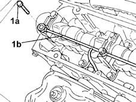

1084B50 timing mount oil pipe - r r
- Path
- Procedures > 10 ENGINE > 1084 ENGINE LUBRICATION SYSTEM > 1084B engine oil lubrication circuit > 1084B50 timing mount oil pipe - r r
- Kind
- repair procedure (removal / refitting; the operation number is the code)
- Applies to
- engines: 1.2 8v; all production periods
- Interactive page
- https://sloeber94.github.io/elrnDB-lYpsln/en/#/2428965
Applies to: engines: 1.2 8v; all production periods
 Removing
Removing
 Refitting
RefittingProceed with removal 1048A10 air cleaner filtering element - replace .
Proceed with removal 1016A20 single cam cover - r + r and replace gasket .
1. Undo the bolts (1a) and remove the oil supply pipe to the camshaft supports (1b).

Applies to: engines: 1.2 8v; all production periods
Refitting
RemovingFit the oil supply pipe to the camshaft supports and fix them tightening the bolts to the recommended torque.
 | Fastening | Component | Ø | Value (daNm) |
|---|---|---|---|---|
- | - | - | - | - |
Proceed with refitting 1016A20 single cam cover - r + r and replace gasket .
Proceed with refitting 1048A10 air cleaner filtering element - replace .